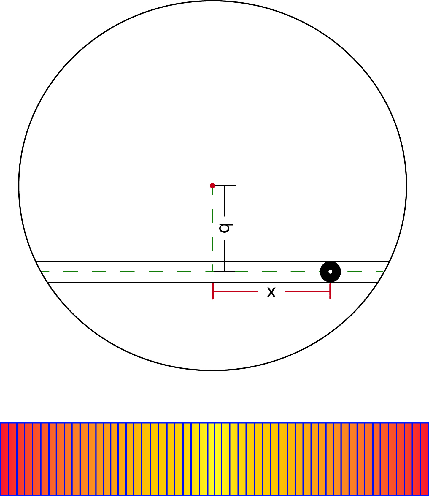

Master Project: The Impact of Magnetic Fields on the Limb Darkening of Solar‐like Stars
This was my master project in Physics at Heidelberg University, Germany.
The main objective of this thesis project is to investigate how magnetic fields permeating the surface layers of solar-like stars influence their limb darkening.
Technologies
- IDL
- FFT
- Latex
1. Transiting model
I used Fast Fourier Transformation (FFT) to simulate transiting process of a panet-star system, and then to calculate the appearent intensity changes on the host star.
2. Main Results
Although magnetic field does show an impact on the limb-darkening law, the resulting parameters h1 h2pp do not agree with each other as one matches with Kepler observational data and the other goes to the opposite direction.
The difference between magnetic and non-magnetic model for CO5BOLD model atmospheres and the difference between the observed and computed values of h1 and h2. For CO5BOLD models, ∆h1 = h1,mag − h1,non−mag while for Kepler data points, ∆h1 = h1,obs − h1,cal.